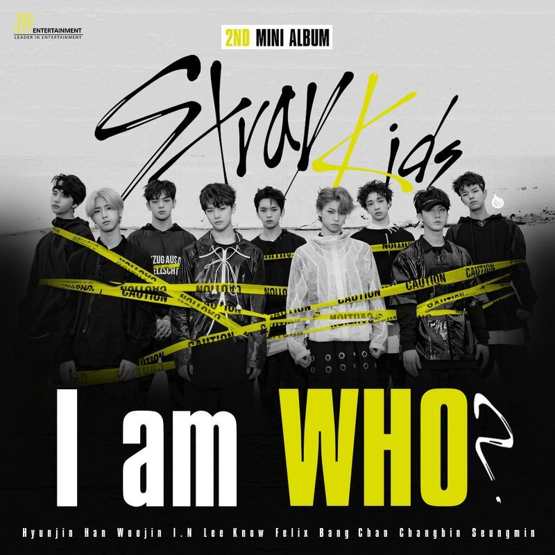
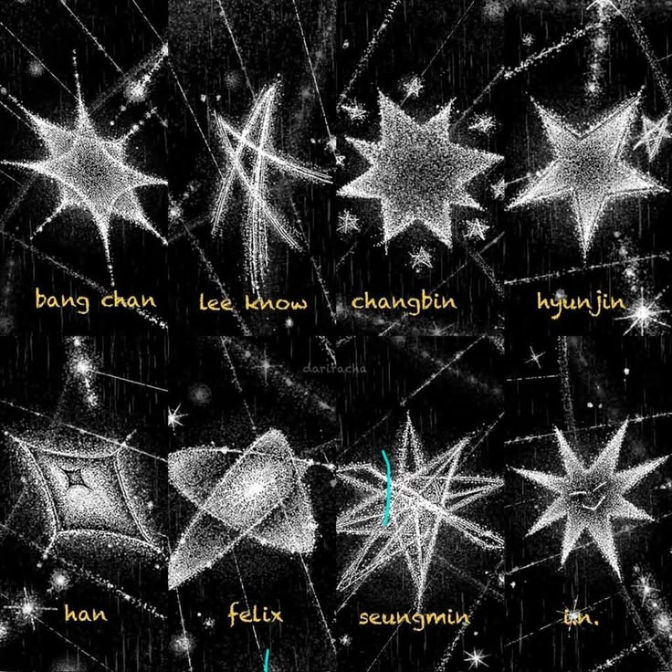

|
 |
En 2018, Stray Kids debutó oficialmente con la trilogía I AM, formada por tres mini álbumes que marcaron su llegada al mundo del K-pop.
Comenzaron el 26 de marzo con I am NOT, presentando el tema "District 9" y mostrando su sonido crudo y autoproducido.
Continuaron el 6 de agosto con I am WHO, liderado por "My Pace", y cerraron el año el 22 de octubre con I am YOU, cuyo tema principal lleva el mismo nombre del álbum. Esta era fue clave para definir la identidad del grupo: ocho integrantes decididos a contar quiénes eran a través de su propia música. |
| Periodo | Marzo - Octubre 2018 |
| I am NOT | 26 de marzo de 2018 - "District 9" |
| I am WHO | 6 de agosto de 2018 - "My Pace" |
| I am YOU | 22 de octubre de 2018 - "I am YOU" |
